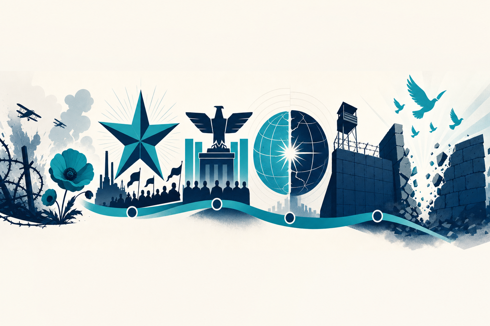

Start here
Hey Beau 👋
Everything you need for the Semester 2 final (Fri July 17) — WWI through the Cold War. It's about 90 minutes: a multiple-choice/matching section plus one CDW essay (36 pts), on the iPad with a lockdown browser — no notes, worth 30% of your grade. So the goal is to actually know it. Tap a tool below.
🃏 Flashcards
Active recall + spaced repetition. The #1 way to make it stick.
✅ Practice Quizzes
By lesson, or a mixed mock final.
✍️ Essay Trainer
The 4 known topics, CDW format, and model essays.
📚 Reference
Key terms, people & timeline you can search.
📅 Your runway to July 17
📈 Progress
0
cards reviewed
—
quiz accuracy
0
cards due now
Heads up: this app is for studying — flashcards, quizzes, and learning the essay format.
Your class bans AI on anything you submit, so never copy these notes/essays into homework. The model essays
below are examples to learn the structure from; on the real final you write your own from memory anyway.
🃏 Flashcards
Look at the front, say the answer out loud or in your head first, then flip. Be honest when you rate yourself — that is what schedules the next review.